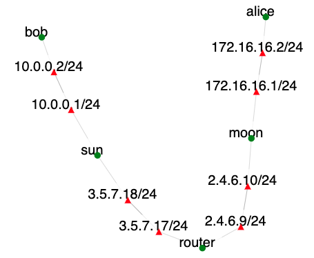

Overview
This exercise teaches installation, configuration, and testing of IPSec.
Introduction
IPSec is the protocol that helps protect end-to-end communication from sniffing and inferrences by routers in between the two communicating endpoints. It does so via encapsulation and encryption of end-to-end traffic. Encapsulation means that traffic appears as if it is travelling between IPSec gateways instead of between endpoints. Encryption ensures that traffic cannot be read by routers in between the gateways.
In this exercise we will work on the topology shown below:

Communicating endpoints alice and bob would like to communicate securely. Their gateways sun and moon will facilitate this by establishing an IPsec tunnel to encapsulate and encrypt traffic between their networks.
Required background reading
We will use strongswan to implement IPSec. You should refer to strongswan documentation to complete the tasks.
Assignment Instructions
Setup
- If you don't have an account, follow the instructions here.
-
Create an instance of this exercise by following the instructions here, using
ipsecas Lab name. Your topology will look like below:.
- After setting up the lab, access your nodes.
Tasks
Intercepting Traffic
Our objective is to establish an IPSec tunnel between sun and moon. Before we do so we will establish what happens in absence of IPSec.
In this exercise bob runs anonymous FTP server and alice wants to access it. On router node, identify the interface with IP address 3.5.7.17 using ifconfig, e.g., ethX. Then run:
sudo tcpdump -i ethX -nn -s 0 -XOn alice type:
ftp bob
...enter "anonymous" as username
...enter any string as password
get README
bye
cat READMENow check the output of the tcpdump command on router. Did the router learn the contents of the README file?
Setting Up the Tunnel
Follow the instructions given at strogswan quickstart to set up IPSec. Be careful to replace the IP addresses in the example with the IP addresses we use in our topology.
Before you can fully complete the setup, you will need to generate and store some private and public keys and certificates. Follow the instructions at PKI quickstart to set up those. Make sure that you use the same strongswan private key on both sun and moon in the process. After you complete the setup run the tcpdump again on router and issue the same commands on alice as before. Can the router see the traffic now?
Submission Instructions
Submit the tcpdump output before and after you have set up the tunnel. You can write the output into files by adding "-w before" or "-w after" to tcpdump commands. Then place both files into the same folder and create the tar-zipped file out of that folder. Submit that file to your instructor.